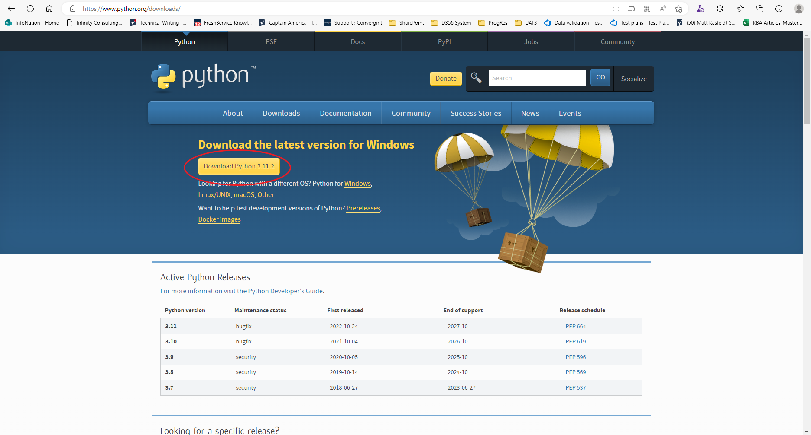
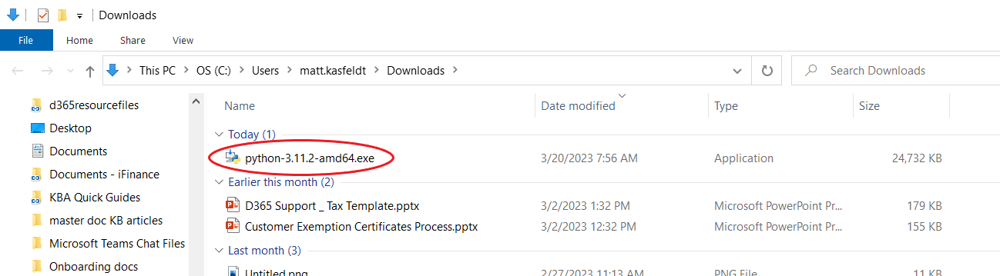
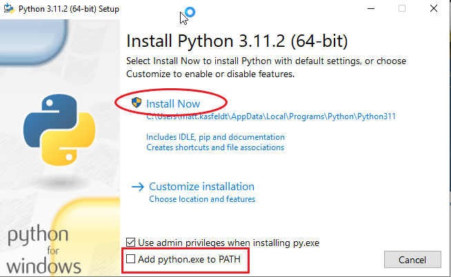

Group: Technical Writing - General - TW
Modified on: 2023-06-20 @ 17:29:17Z
Purpose: Install python with PIP. PIP is used to install python packages that are needed.
Prerequisites:
To install Python with PIP:
1. Open your browser to https://www.python.org/downloads/ .
2. Click the Download Python 3.x.x button, where 3.x.x is the latest version.

Figure 1 – Open your Browser to https://www.python.org/downloads/
3. Find the install file and double click it.

Figure 2 – Double Click the Install File
4. Ensure the Add python.exe to PATH checkbox is checked, then click Install Now.

Figure 3 – Check the Add Python.exe to PATH Checkbox and Click Install Now
5. Follow the prompts, selecting the default for each to complete the install.
Outcome: Python with PIP has been installed